जब प्रकाश किरण एक माध्यम से दूसरे माध्यम में प्रवेश करती है तो वह अपने मार्ग से विचलित हो जाती है। इस घटना को प्रकाश का अपवर्तन कहते हैं।
जब प्रकाश किरण विरल माध्यम से सघन माध्यम में प्रवेश करती है तो वह अपवर्तन के पश्चात् अभिलंब की ओर झुक जाती है।
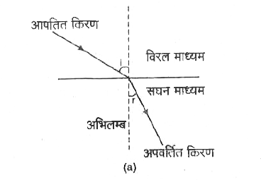
जब प्रकाश किरण सघन माध्यम से विरल माध्यम में प्रवेश करती है तो वह अपवर्तन के पश्चात् अभिलंब से दूर हट जाती है।
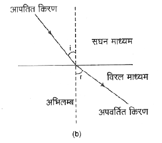
प्रश्न: एक प्रकाश की किरण प्रकाशिक विरल माध्यम से प्रकाशिक सघन माध्यम में तिर्यक प्रवेश करती है तो प्रकाश की किरण का वेग और आवृत्ति पर क्या प्रभाव पड़ेगा? लिखिए। (2024)
एक प्रकाश की किरण प्रकाशिक विरल माध्यम से प्रकाशिक सघन माध्यम में तिर्यक प्रवेश करती है तो प्रकाश की किरण का वेग कम हो जायेगा तथा उसकी आवृत्ति अपरिवर्तित रहेगी।
प्रश्न: प्रकाश के अपवर्तन के नियम लिखिए। अथवा प्रश्न: स्नेल का नियम लिखिए।
अपवर्तन के दो नियम हैं-
आपतित किरण, अपवर्तित किरण और आपतन बिन्दु पर अभिलम्ब तीनों एक ही तल में होते हैं।
किसी प्रकाश के लिए आपतन कोण की ज्या और अपवर्तन कोण की ज्या में एक निश्चित अनुपात होता है जिसे पहले माध्यम के सापेक्ष दूसरे माध्यम का अपवर्तनांक कहते हैं। इसे ग्रीक अक्षर \({}_1\mu_2\) (म्यू) से प्रदर्शित करते हैं। इसे स्नेल का नियम कहते हैं।
इस प्रकार
$$
{}_1\mu_2 = \frac{\sin i}{\sin r}
$$
जहाँ—
\({}_1\mu_2\) = पहले माध्यम के सापेक्ष दूसरे माध्यम का अपवर्तनांक
\(i\) = आपतन कोण
\(r\) = अपवर्तन कोण।
प्रश्न: अपवर्तनांक की परिभाषा लिखिए।
जब प्रकाश किरण एक माध्यम से दूसरे माध्यम में प्रवेश करती है तो दोनों माध्यमों में प्रकाश वेगों के अनुपात को पहले माध्यम के सापेक्ष दूसरे माध्यम का अपवर्तनांक कहते हैं। इसे ग्रीक अक्षर \({}_1\mu_2\) (म्यू) से प्रदर्शित करते हैं।
इस प्रकार
$$
{}_1\mu_2 = \frac{V_1}{V_2}
$$
जहाँ—
\({}_1\mu_2\) = पहले माध्यम के सापेक्ष दूसरे माध्यम का अपवर्तनांक
\(i\) = आपतन कोण
\(r\) = अपवर्तन कोण।
प्रश्न: किसी माध्यम का अपवर्तनांक कौन से कारकों पर निर्भर करता है?
किसी माध्यम का अपवर्तनांक निम्न कारकों पर निर्भर करता है। (2022)
माध्यम की भौतिक अवस्था पर।
माध्यम के रंग पर।
माध्यम के जोड़े की प्रकृति पर।
प्रश्न: तारे टिमटिमाते हैं जबकि चन्द्रमा नहीं। क्यों?
तारों का प्रकाश वायुमंडल की अलग-अलग परतों से होकर आता है।
इन परतों का तापमान और घनत्व बदलता रहता है, इसलिए तारों का
प्रकाश बार-बार थोड़ा मुड़ता है। इसी कारण तारे टिमटिमाते दिखाई देते हैं।
चन्द्रमा पृथ्वी के पास है और बड़ा दिखाई देता है। उससे बहुत अधिक
प्रकाश हमारी आँखों तक पहुँचता है, इसलिए प्रकाश में होने वाले छोटे
बदलाव दिखाई नहीं देते। इसी कारण चन्द्रमा टिमटिमाता हुआ दिखाई नहीं देता।
प्रश्न: गर्मियों में दोपहर के समय पेड़ और मकान हिलते हुए क्यों दिखाई देते हैं?
गर्मियों में दोपहर के समय धरती के पास की हवा बहुत गर्म हो जाती है।
गर्म और ठंडी हवा की परतों का घनत्व और अपवर्तनांक अलग-अलग होता है।
इसलिए पेड़ और मकान से आने वाला प्रकाश थोड़ा-थोड़ा मुड़ता रहता है।
इसी कारण पेड़ और मकान हमें हिलते हुए दिखाई देते हैं।
प्रश्न: सिद्ध कीजिए कि \({}_a\mu_w \times {}_w\mu_g \times {}_g\mu_a = 1\)
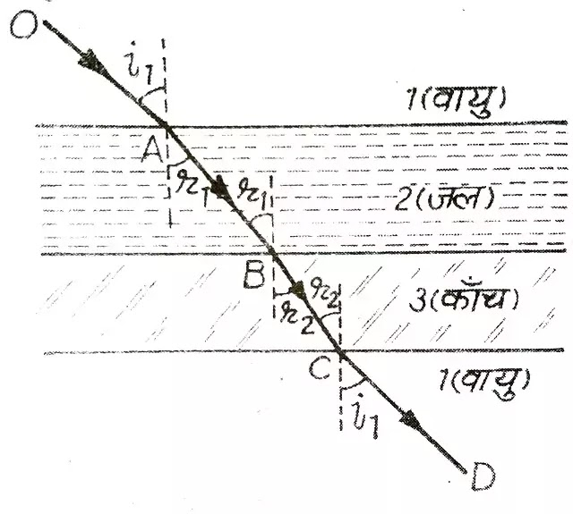
मानलो कोई प्रकाश किरण AB कई माध्यमों में क्रमशः अपवर्तित होती है। पहला तथा अन्तिम माध्यम एक ही है।
माना वायु, जल और कांच में प्रकाश की चाल क्रमशः \(V_a\), \(V_w\) और \(V_g\) हैं।
बिन्दु B पर प्रकाश किरण वायु से जल में प्रवेश करती है। अतः
प्रश्न: प्रकाश की उत्क्रमणीयता का सिद्धान्त क्या है? समझाइए।
यदि कोई प्रकाश किरण विभिन्न माध्यमों से अपवर्तित हो रही हो तो उसके मार्ग को उत्क्रमित करने पर वह जिस मार्ग से जा रही थी उसी मार्ग से विपरीत दिशा में लौट जाती है। इसे प्रकाश की उत्क्रमणीयता का सिद्धान्त कहते हैं।
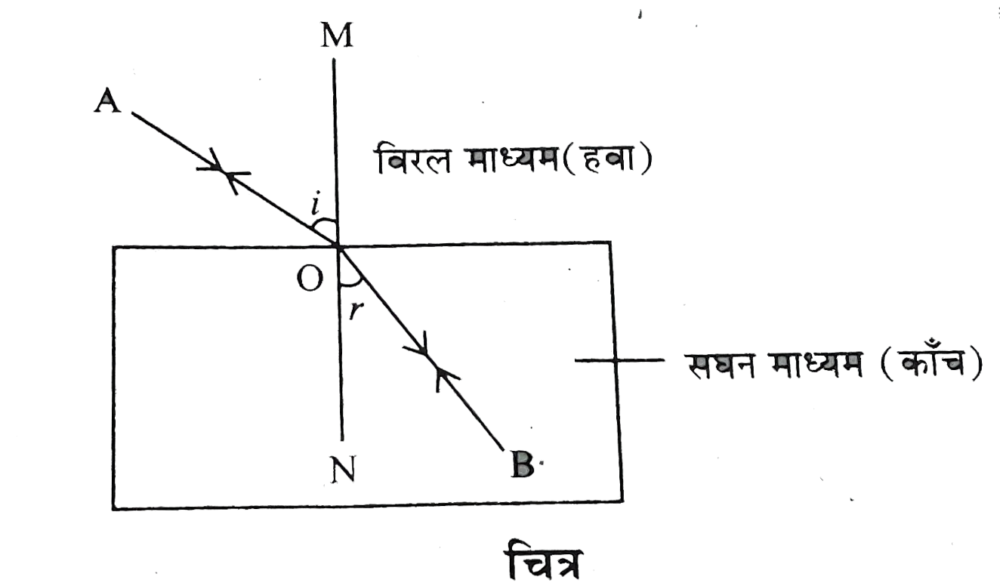
अर्थात्
$$
{}_1\mu_2 = \frac{1}{{}_2\mu_1}
$$
जहाँ—
\({}_1\mu_2\) = पहले माध्यम के सापेक्ष दूसरे माध्यम का अपवर्तनांक
\({}_2\mu_1\) = दूसरे माध्यम के सापेक्ष पहले माध्यम का अपवर्तनांक
प्रश्न: सघन माध्यम में स्थित वस्तु की वास्तविक गहराई, आभासी गहराई और माध्यम के अपवर्तनांक के मध्य संबंध स्थापित कीजिए।
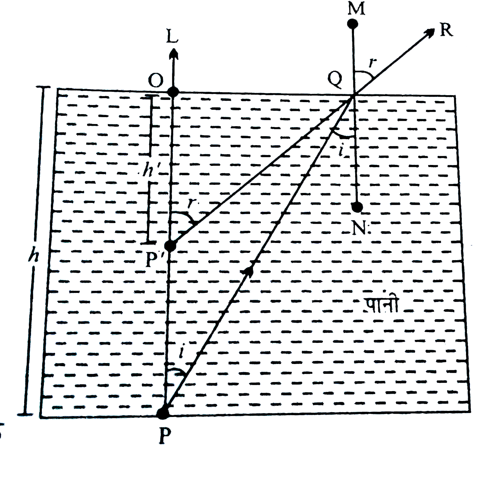
माना कि एक वस्तु \(P\) सघन माध्यम में स्थित है। अपवर्तन के कारण वस्तु अपने वास्तविक स्थान से ऊपर उठी हुई दिखाई देती है और उसका आभासी प्रतिबिंब \(P'\) बनता है।
अतः सघन माध्यम का अपवर्तनांक वास्तविक गहराई और आभासी गहराई के अनुपात के बराबर होता है।
प्रश्न: क्रांतिक कोण किसे कहते हैं? क्रांतिक कोण किन कारकों पर निर्भर करता है?
जब कोई प्रकाश किरण सघन माध्यम से विरल माध्यम में प्रवेश करती है तो सघन माध्यम में वह आपतन कोण जिसके संगत विरल माध्यम में अपवर्तन कोण का मान \(90^\circ\) होता है, क्रांतिक कोण कहलाता है। इसे \(i_c\) से प्रदर्शित करते हैं।
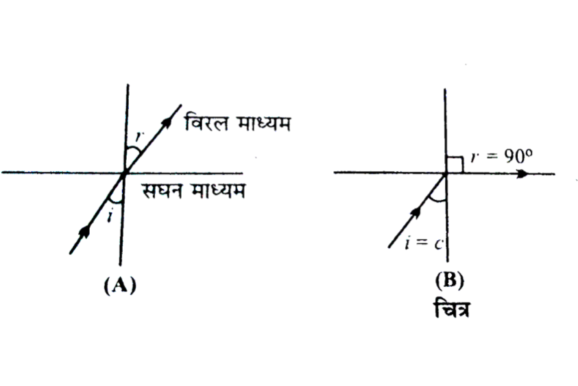
क्रांतिक कोण को प्रभावित करने वाले कारक - क्रांतिक कोण का मान निम्न कारकों पर निर्भर करता है—
प्रयुक्त प्रकाश के रंग पर - बैंगनी रंग के लिये अपवर्तनांक सर्वाधिक होता है। अतः क्रान्तिक कोण का मान बैंगनी रंग के लिये सबसे कम तथा लाल रंग के लिए सबसे अधिक होता है।
सघन और विरल माध्यम के जोड़े पर - क्रांतिक कोण का मान सघन और विरल माध्यम के जोड़े पर निर्भर करता है। काँच और वायु के जोड़े के लिए क्रांतिक कोण का मान लगभग \(42^\circ\), जल और वायु के जोड़े के लिए लगभग \(49^\circ\) तथा हीरे और वायु के जोड़े के लिये \(24^\circ\) होता है।
ताप पर - ताप बढ़ाने पर माध्यम का अपवर्तनांक घटता है। अतः क्रांतिक कोण का मान बढ़ता है।
प्रश्न: क्रांतिक कोण और अपवर्तनांक में सम्बन्ध स्थापित कीजिए। अथवा प्रश्न: क्रांतिक कोण तथा माध्यम के अपवर्तनांक में सम्बन्ध प्राप्त कीजिए।
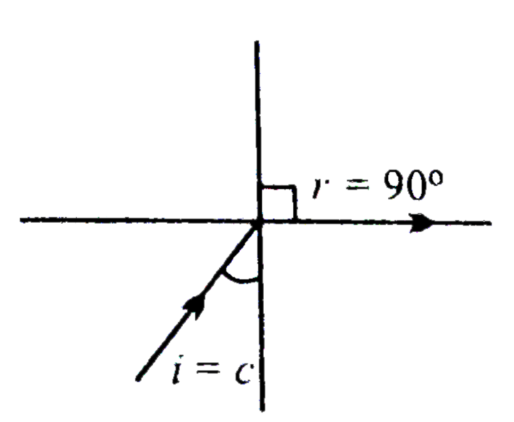
मानलो कोई प्रकाश किरण सघन माध्यम (काँच) से विरल माध्यम (वायु) में जा रही है। यदि सघन माध्यम में क्रान्तिक कोण \(i_c\) के लिए विरल माध्यम में अपवर्तन कोण \(r = 90^\circ\) है।
प्रश्न: सामान्य काँच की तुलना में हीरे का अपवर्तनांक काफी अधिक होता है। क्या हीरा तराशने वालों के लिए इस तथ्य का उपयोग होता है?
सामान्य काँच (\(\mu = 1.5\) लगभग) की तुलना में हीरे का अपवर्तनांक काफी अधिक (\(\mu = 2.42\)) होता है जिससे हीरे का क्रांतिक कोण लगभग \(24^\circ\) होता है। इस प्रकार हीरे पर \(24^\circ\) से \(90^\circ\) कोण पर आपतित किरणों का कई बार पूर्ण आंतरिक परावर्तन हो जाता है जिससे हीरे की चमक बढ़ जाती है।
हीरे को तराशने वालों के लिए यह तथ्य बहुत ही महत्वपूर्ण होता है।
प्रश्न: हीरा क्यों चमकता है? कारण बताइए।
हीरे का अपवर्तनांक 2.42 है जिसके लिये क्रांतिक कोण का मान बहुत ही कम, लगभग \(24^\circ\) होता है। जब प्रकाश कटे हुये तल वाले हीरे में प्रवेश करता है तो क्रांतिक कोण का मान कम होने के कारण ही बार-बार उसका पूर्ण आंतरिक परावर्तन होता है। प्रवेश हुआ प्रकाश केवल कुछ बिन्दुओं से बाहर निकलता है जहाँ आपतन कोण का मान क्रांतिक कोण से कम होता है। इस दिशा में सभी किरणें निकलती हैं, जिससे हीरे की चमक बढ़ जाती है।
प्रश्न: पूर्ण आन्तरिक परावर्तन किसे कहते हैं? इसके लिए आवश्यक शर्तें लिखिए।
जब कोई प्रकाश किरण सघन माध्यम से विरल माध्यम में प्रवेश करती है और जब आपतन कोण का मान क्रान्तिक कोण के मान से अधिक होता है, तो प्रकाश किरण दूसरे माध्यम में प्रवेश करने के बजाय उसी माध्यम में परावर्तित हो जाती है। इस घटना को प्रकाश का पूर्ण आन्तरिक परावर्तन कहते हैं।
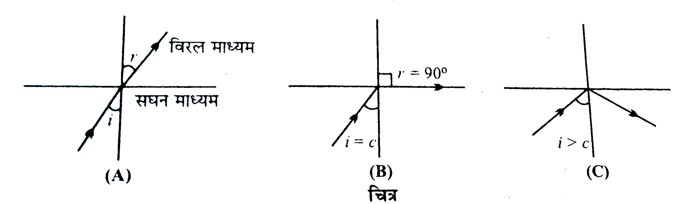
आवश्यक शर्तें -
प्रकाश किरण को सघन माध्यम से विरल माध्यम में जाना चाहिए।
आपतन कोण के मान को क्रान्तिक कोण के मान से अधिक होना चाहिए।
प्रश्न: पूर्ण आन्तरिक परावर्तन के अनुप्रयोग लिखिए।
पूर्ण आन्तरिक परावर्तन के अनुप्रयोग निम्न हैं—
गर्म प्रदेशों की मरीचिका।
ठंडे प्रदेशों की मरीचिका।
प्रकाशिक तंतु।
प्रश्न: प्रकाशिक तंतु किसे कहते हैं?
प्रकाशिक तंतु पूर्ण आंतरिक परावर्तन पर आधारित ऐसी युक्ति है जिसकी सहायता से प्रकाश सिग्नल को उसी तीव्रता के साथ टेढ़े-मेढ़े मार्ग से अल्प दूरी तक ले जाया जा सकता है।
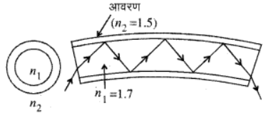
संरचना: प्रकाशिक तंतु मुख्यतः तीन भागों से बना होता है—
क्रोड (Core): यह तंतु का मध्य भाग है, जिसमें प्रकाश का संचरण होता है।
आवरण (Cladding): यह क्रोड के चारों ओर होता है तथा इसका अपवर्तनांक क्रोड से कम होता है।
सुरक्षात्मक आवरण (Coating): यह तंतु को बाहरी क्षति से बचाता है।
कार्यविधि: प्रकाशिक तंतु पूर्ण आंतरिक परावर्तन के सिद्धांत पर कार्य करता है। जब प्रकाश उचित कोण पर क्रोड में प्रवेश करता है, तो वह क्रोड और आवरण की सीमा पर बार-बार पूर्ण आंतरिक परावर्तन करता हुआ आगे बढ़ता है। इस प्रकार प्रकाश संकेत बिना बाहर निकले तंतु के दूसरे सिरे तक पहुँच जाता है।
प्रश्न: उत्तल गोलीय पृष्ठ के लिए अपवर्तन का सूत्र निगमित कीजिए
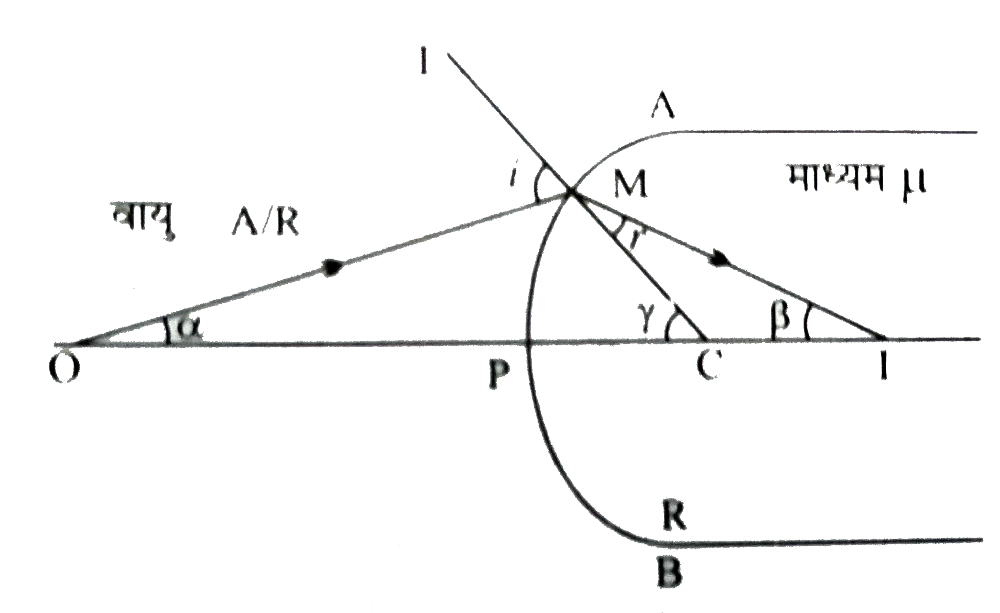
माना \(APB\) एक उत्तल गोलीय पृष्ठ है। इसके सघन माध्यम का अपवर्तनांक
\(\mu\) है। माना बिंदु-वस्तु \(O\) का वास्तविक प्रतिबिम्ब \(I\) पर बनता है।
माना आपतित किरण \(OM\), अपवर्तित किरण \(IM\) तथा अभिलम्ब \(CL\) मुख्य अक्ष के साथ
क्रमशः \(\alpha\), \(\beta\) तथा \(\gamma\) कोण बनाते हैं। तब —
कोण =
चापत्रिज्या
$$
\alpha = \frac{MP}{OP} = \frac{MP}{-u}
$$
$$
\beta = \frac{MP}{IP} = \frac{MP}{+v}
$$
$$
\gamma = \frac{MP}{CP} = \frac{MP}{+R}
$$
माना यदि आपतन कोण \(i\) हो तो समकोण \(\triangle OMC\) में बहिष्कोण प्रमेय से —
$$
i = \alpha + \gamma
$$
इसी प्रकार यदि अपवर्तन कोण \(r\) हो तो समकोण \(\triangle IMC\) में बहिष्कोण प्रमेय से —
$$
\gamma = r + \beta
$$
$$
r = \gamma - \beta
$$
अब स्नेल के नियम से —
$$
\mu = \frac{\sin i}{\sin r}
$$
छोटे कोणों के लिए \(\sin\theta \approx \theta\), इसलिए —
प्रश्न: अवतल गोलीय पृष्ठ के लिए अपवर्तन का सूत्र निगमित कीजिए
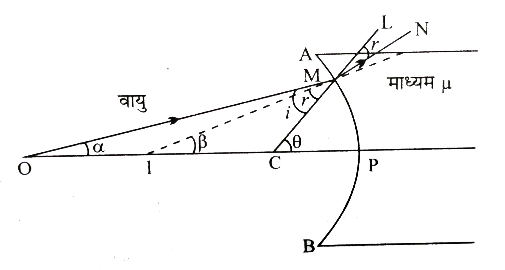
माना \(APB\) एक अवतल गोलीय पृष्ठ है। इसके सघन माध्यम का अपवर्तनांक
\(\mu\) है। माना बिंदु-वस्तु \(O\) का वास्तविक प्रतिबिम्ब \(I\) पर बनता है।
माना आपतित किरण \(OM\), अपवर्तित किरण \(IM\) तथा अभिलम्ब \(CL\) मुख्य अक्ष के साथ
क्रमशः \(\alpha\), \(\beta\) तथा \(\gamma\) कोण बनाते हैं। तब —
कोण =
चापत्रिज्या
$$\alpha = \frac{MP}{OP} = \frac{MP}{-u}$$
$$\beta = \frac{MP}{IP} = \frac{MP}{-v}$$
$$\gamma = \frac{MP}{CP} = \frac{MP}{-R}$$
माना यदि आपतन कोण i हो तो समकोण \(\triangle OMC\) में बहिष्कोण प्रमेय से —
$$\gamma = \alpha + i$$
$$i = \gamma - \alpha$$
इसी प्रकार यदि अपवर्तन कोण r हो तो समकोण \(\triangle IMC\) में बहिष्कोण प्रमेय से —
$$\gamma = \beta + r$$
$$r = \gamma - \beta$$
अब स्नेल के नियम से —
$$\mu = \frac{\sin i}{\sin r}$$
छोटे कोणों के लिए \(\sin\theta \approx \theta\), इसलिए —
प्रश्न: लेंस किसे कहते हैं? लेंस कितने प्रकार के होते हैं?
वह पारदर्शी माध्यम जिसकी कम से कम एक सतह वक्र होती है, लेंस कहलाता है। लेंस प्रकाश को अपवर्तन द्वारा अभिसरित या अपसारित करता है।
लेंस दो प्रकार के होते हैं—
उत्तल लेंस - यह लेंस बीच में मोटा और किनारों पर पतला होता है। यह प्रकाश किरणों को अभिसरित करता है। अतः इसे अभिसारी लेंस भी कहते हैं। (चित्र)
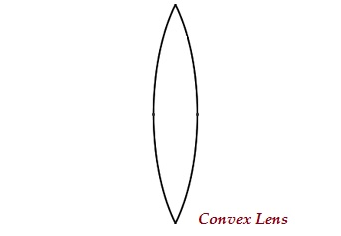
अवतल लेंस - यह लेंस बीच में पतला और किनारों पर मोटा होता है। यह प्रकाश किरणों को अपसारित करता है। अतः इसे अपसारी लेंस भी कहते हैं। (चित्र)
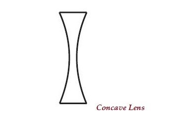
प्रश्न: समझाइए कि किस तरह उत्तल लेंस, अभिसारी लेंस की तरह कार्य करता है?
उत्तल लेंस को छोटे-छोटे प्रिज्मों से मिलकर बना मान सकते हैं जिनका आधार लेंस के केन्द्रीय भाग की ओर होता है। प्रिज्म में यह गुण होता है कि वह किरणों को आधार की ओर मोड़ देता है। अतः प्रत्येक प्रिज्म पर आपतित समान्तर किरणें लेंस से अपवर्तन के पश्चात् एक बिन्दु पर मिल जाती हैं।
इस प्रकार उत्तल लेंस किरणों को अभिसरित (एक बिन्दु पर केन्द्रित) कर देता है। अतः उत्तल लेंस को अभिसारी लेंस कहते हैं।
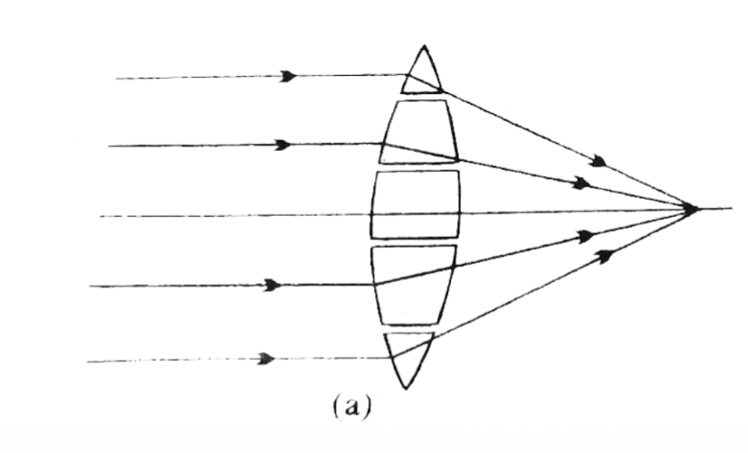
प्रश्न: समझाइए कि किस तरह अवतल लेंस, अपसारी लेंस की तरह कार्य करता है?
अवतल लेंस को छोटे-छोटे प्रिज्मों से मिलकर बना मान सकते हैं जिनका आधार लेंस के केन्द्रीय भाग के ऊपर की ओर होता है। प्रिज्म में यह गुण होता है कि वह किरणों को आधार की ओर मोड़ देता है। अतः प्रिज्म पर आपतित समान्तर किरणें लेंस से अपवर्तन के पश्चात् फैल जाती हैं।
इस प्रकार अवतल लेंस किरणों को अपसरित कर देता है (फैला देता है)। ये किरणें एक बिन्दु से आती हुई प्रतीत होती हैं। अतः अवतल लेंस को अपसारी लेंस भी कहते हैं।
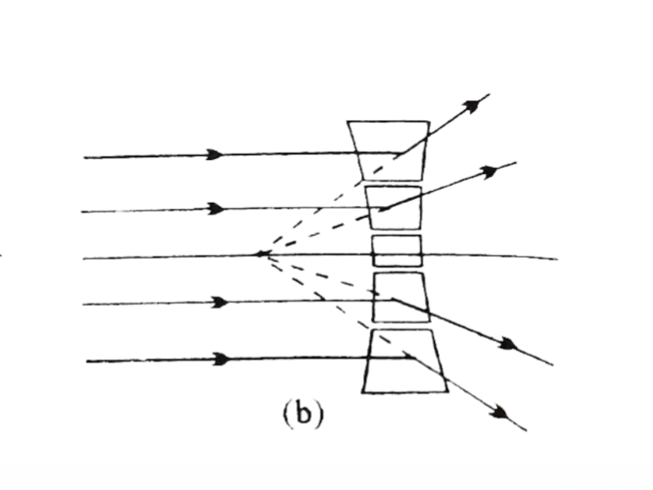
प्रश्न: वायु का बुलबुला जल में किस प्रकार व्यवहार करता है तथा क्यों?
जल में वायु का बुलबुला अवतल लेंस की तरह व्यवहार करता है क्योंकि वायु का अपवर्तनांक जल से कम होता है, जिससे प्रकाश किरणें अपसरित हो जाती हैं।
प्रश्न: लेंस के लिए निम्न को परिभाषित कीजिए।
मुख्य अक्ष - लेंस के दोनों वक्र केंद्रों को मिलाने वाली सीधी रेखा को मुख्य अक्ष कहते हैं। यह लेंस के केंद्र से होकर गुजरती है।
प्रकाशीय केंद्र - लेंस के बीचों-बीच स्थित वह बिंदु जिससे होकर जाने वाली किरण बिना मुड़े (अपवर्तित हुए) सीधी निकल जाती है, उसे प्रकाशीय केंद्र (\(O\)) कहते हैं।
प्रथम मुख्य फोकस - मुख्य अक्ष पर स्थित वह बिन्दु जिससे होकर आपतित होने वाली किरणें (उत्तल लेंस में) या जिसकी दिशा में आपतित होने वाली किरणें (अवतल लेंस में) लेंस से अपवर्तन के पश्चात् मुख्य अक्ष के समान्तर हो जाती हैं, लेंस का प्रथम मुख्य फोकस कहलाता है। चित्र में \(F_1\) प्रथम मुख्य फोकस है।
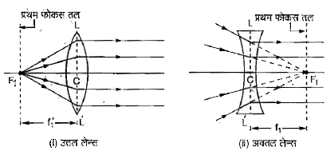
द्वितीय मुख्य फोकस - मुख्य अक्ष के समान्तर आपतित किरणें लेंस से अपवर्तन के पश्चात् मुख्य अक्ष के जिस बिन्दु पर मिलती हैं (उत्तल लेंस में) या मुख्य अक्ष के जिस बिन्दु से फैलती हुई प्रतीत होती हैं (अवतल लेंस में), उसे लेंस का द्वितीय मुख्य फोकस कहते हैं। चित्र में \(F_2\) द्वितीय मुख्य फोकस है। द्वितीय मुख्य फोकस को लेंस का मुख्य फोकस भी कहते हैं।
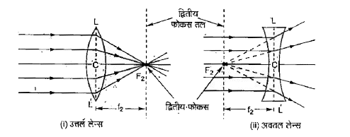
फोकस दूरी - लेंस के प्रकाशीय केंद्र (\(O\)) और उसके फोकस (\(F\)) के बीच की दूरी को फोकस दूरी कहते हैं। इसे प्रतीक \(f\) से दर्शाया जाता है।
प्रश्न: लेंसों के द्वारा प्रतिबिंब की रचना के नियम लिखिए।
लेंसों के द्वारा प्रतिबिंब की रचना के निम्न नियम हैं—
पहला नियम - जो किरण मुख्य अक्ष के समांतर आपतित होती है वह लेंस से अपवर्तन के बाद मुख्य फोकस से होकर जाती है (उत्तल लेंस में ) या मुख्य फोकस से होकर आती हुई प्रतीत होती है ( अवतल लेंस में )
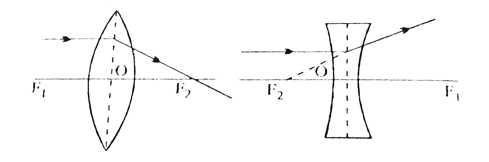
दूसरा नियम - जो किरण प्रथम मुख्य फोकस से होकर आपतित होती है (उत्तल लेंस में ) या प्रथम मुख्य फोकस की दिशा में आपतित होती है (अवतल लेंस में ) वह किरण अपवर्तन के बाद मुख्य अक्ष के समांतर हो जाती है ।
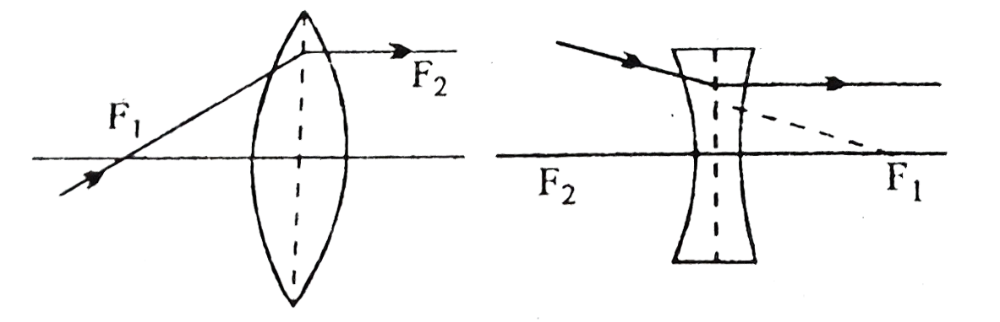
तीसरा नियम - जब कोई किरण लेंस के प्रकाशीय केंद्र (\(O\)) से होकर गुजरती है, तो वह अपवर्तित नहीं होती, अर्थात् सीधी रेखा में आगे बढ़ती है।
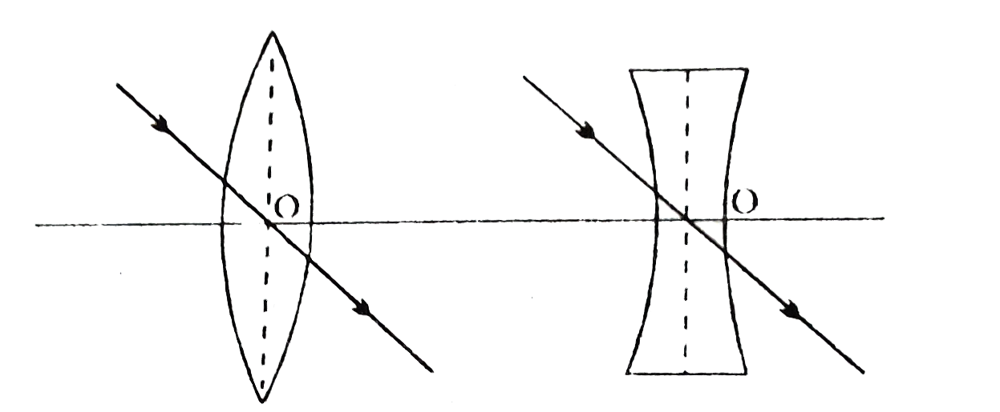
प्रश्न: पतले लेंस के लिए लेंस सूत्र \(\frac{1}{f} = \frac{1}{v} - \frac{1}{u}\) निगमित कीजिए।
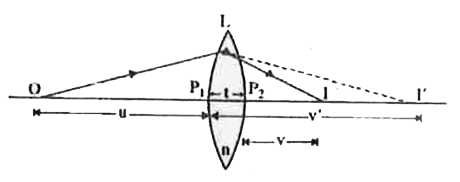
माना एक पतला उत्तल लेंस \(L\) है जिसके दोनों पृष्ठों की वक्रता त्रिज्याएँ \(R_1\) और \(R_2\) हैं। लेंस के पदार्थ का अपवर्तनांक \(\mu\) है।
प्रथम पृष्ठ पर अपवर्तन:
माना द्वितीय पृष्ठ की अनुपस्थिति मे, मुख्य अक्ष पर रखी बिन्दु वस्तु \(O\) का प्रथम गोलीय पृष्ठ से अपवर्तन के पश्चात प्रतिबिम्ब \(I'\) बनता है। इसमें प्रकाश किरण वायु से माध्यम मे प्रवेश करती है। इस स्थिति में -
$$ u = -u $$
$$ v = v' $$
$$ R = R_1$$
$$\mu = \mu$$
गोलीय पृष्ठ के सूत्र \(\frac{\mu}{v} - \frac{1}{u} = \frac{\mu-1}{R}\) से -
प्रथम पृष्ठ से बना प्रतिबिम्ब, द्वितीय पृष्ठ के लिए वस्तु का कार्य करता है। माना \(I'\) का द्वितीय पृष्ठ से अपवर्तन के पश्चात प्रतिबिम्ब \(I\) पर बनता है। इसमें प्रकाश किरण माध्यम से वायु में प्रवेश करती है। इस स्थिति में -
$$ u = v' $$
$$ v = v $$
$$ R = R_2$$
$$\mu = \frac{1}{\mu}$$
गोलीय पृष्ठ के सूत्र \(\frac{\mu}{v} - \frac{1}{u} = \frac{\mu-1}{R}\) से -
प्रश्न: सिद्ध करो की \(\frac{1}{f_1} + \frac{1}{f_2} = \frac{1}{f}\)
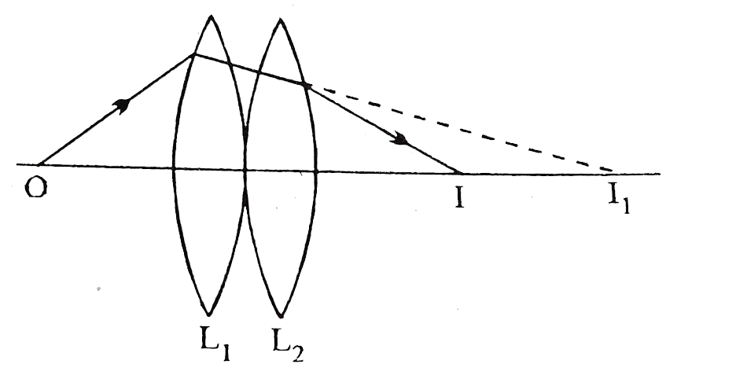
माना दो उत्तल लेंस \(L_1\) तथा \(L_2\) है जिनकी फोकस दूरिया क्रमशः \(f_1\) और \(f_2\) हैं।
प्रथम लेंस \(L_1\) से अपवर्तन :
माना द्वितीय लेंस की अनुपस्थिति मे, मुख्य अक्ष पर रखी बिन्दु वस्तु \(O\) का प्रथम लेंस से अपवर्तन के पश्चात प्रतिबिम्ब \(I_1\) बनता है। इस स्थिति में -
$$ u = u $$
$$ v = v_1 $$
$$ f = f_1 $$
लेंस सूत्र \(\frac{1}{f} = \frac{1}{v} - \frac{1}{u}\) से -
प्रथम लेंस से बना प्रतिबिम्ब, द्वितीय लेंस के लिए वस्तु का कार्य करता है। माना \(I_1\) का द्वितीय लेंस से अपवर्तन के पश्चात प्रतिबिम्ब \(I\) पर बनता है। इस स्थिति में -
$$ u = v_1 $$
$$ v = v $$
$$ f = f_2 $$
लेंस सूत्र \(\frac{1}{f} = \frac{1}{v} - \frac{1}{u}\) से -
जहाँ
\(f\) = फोकस दूरी
\(v\) = प्रतिबिंब दूरी
\(u\) = वस्तु दूरी
माना कि L एक उत्तल लेंस है जिसका प्रकाशीय केंद्र O तथा फोकस F है। इसकी मुख्य अक्ष के किसी बिन्दु पर एक वस्तु AB रखी है जिसका लेंस से अपवर्तन के पश्चात प्रतिबिंब A'B' पर बनता है।
समकोण \(\triangle ABO\) तथा \(\triangle A'B'O\) में -
$$ \frac{AB}{A'B'} = \frac{OB}{OB'} \tag{1} $$
इसी प्रकार, समकोण \(\triangle LOF\) तथा \(\triangle A'B'F\) में -
प्रश्न: उत्तल लेंसों में विभिन्न वस्तुओं की स्थितियों के लिए प्रतिबिंब निर्माण की प्रकृति, आकार और स्थिति का वर्णन कीजिए।
उत्तल लेंसों में विभिन्न वस्तुओं की स्थितियों के लिए प्रतिबिंब निर्माण—
जब वस्तु अनंत पर हो - जब वस्तु अनंत पर होती है तो उत्तल लेंस से अपवर्तन के पश्चात् प्रतिबिंब लेंस के दूसरी ओर फोकस पर बनता है। प्रतिबिंब वास्तविक, उल्टा तथा बहुत छोटा, या बिंदु-आकार का होता है।
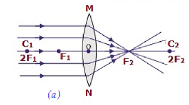
जब वस्तु \(2F\) से परे स्थित हो - जब वस्तु \(2F\) से परे होती है तो उत्तल लेंस से अपवर्तन के पश्चात् प्रतिबिंब लेंस के दूसरी ओर \(F\) और \(2F\) के बीच बनता है। प्रतिबिंब वास्तविक, उल्टा तथा वस्तु से छोटा होता है।
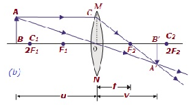
जब वस्तु \(2F\) पर स्थित हो - जब वस्तु \(2F\) पर स्थित होती है तो उत्तल लेंस से अपवर्तन के पश्चात् प्रतिबिंब लेंस के दूसरी ओर \(2F\) पर बनता है। प्रतिबिंब वास्तविक, उल्टा तथा वस्तु के आकार का होता है।
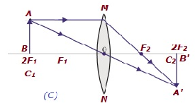
जब वस्तु \(2F\) और \(F\) के मध्य स्थित हो - जब वस्तु \(2F\) और \(F\) के मध्य स्थित होती है तो उत्तल लेंस से अपवर्तन के पश्चात् प्रतिबिंब लेंस के दूसरी ओर \(2F\) से परे बनता है। प्रतिबिंब वास्तविक, उल्टा तथा वस्तु से बड़ा होता है।
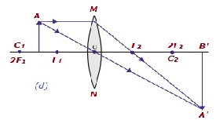
जब वस्तु \(F\) से परे स्थित हो - जब वस्तु \(F\) से परे होती है तो उत्तल लेंस से अपवर्तन के पश्चात् प्रतिबिंब लेंस के दूसरी ओर अनंत पर बनता है। प्रतिबिंब वास्तविक, उल्टा तथा वस्तु से बहुत बड़ा होता है।
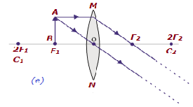
जब वस्तु \(F\) और \(O\) के मध्य स्थित हो - जब वस्तु \(F\) और \(O\) के मध्य स्थित होती है तो उत्तल लेंस से अपवर्तन के पश्चात् प्रतिबिंब वस्तु की ओर ही बनता है। प्रतिबिंब आभासी, सीधा तथा वस्तु से बड़ा होता है।
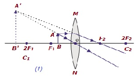
प्रश्न: उत्तल लेंस के उपयोग लिखिए।
उत्तल लेंस के उपयोग निम्न हैं—
आवर्धक काँच बनाने में - यह वस्तु का बड़ा प्रतिबिंब दिखाता है।
दृष्टिदोष सुधारने में - हाइपरोमेट्रोपिया (दूर दृष्टि दोष) को ठीक करने के लिए चश्मे में उत्तल लेंस लगाए जाते हैं।
कैमरे में - प्रकाश को एक बिंदु पर केंद्रित करने के लिए कैमरे के लेंस में उत्तल लेंस का प्रयोग होता है।
सूक्ष्मदर्शी और दूरदर्शी में - वस्तुओं को बड़ा और स्पष्ट दिखाने के लिए प्रयोग किया जाता है।
प्रोजेक्टर में - पर्दे पर वस्तु का बड़ा प्रतिबिंब बनाने के लिए उपयोग किया जाता है।
प्रश्न: अवतल लेंस में वस्तु के लिए प्रतिबिंब निर्माण की प्रकृति, आकार और स्थिति का वर्णन कीजिए।
अवतल लेंस में वस्तु की स्थिति के आधार पर प्रतिबिंब निर्माण की प्रमुख स्थितियाँ निम्नलिखित हैं—
जब वस्तु अनंत पर हो:
प्रतिबिंब लेंस के प्रकाशिक केन्द्र और फोकस के बीच, फोकस के बहुत निकट बनता है। प्रतिबिंब आभासी, सीधा और अत्यंत छोटा होता है।
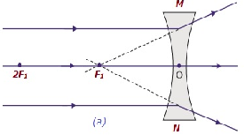
जब वस्तु सीमित दूरी पर हो:
प्रतिबिंब वस्तु की ओर लेंस के प्रकाशिक केन्द्र और फोकस के बीच बनता है। प्रतिबिंब आभासी, सीधा और वस्तु से छोटा होता है।
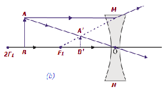
प्रश्न: अवतल लेंस के उपयोग लिखिए।
अवतल लेंस के उपयोग—
दृष्टिदोष सुधारने में - मायोपिया (निकट दृष्टि दोष) को ठीक करने के लिए चश्मे में अवतल लेंस का प्रयोग किया जाता है।
लेज़र बीम को फैलाने के लिए प्रयोग किया जाता है।
कैमरा और दूरबीन में किरणों को नियंत्रित करने और स्पष्ट चित्र प्राप्त करने के लिए उपयोग होता है।
सुरक्षा उपकरणों जैसे डोर पीप होल (दरवाज़े की झिरी) में वस्तु का छोटा और विस्तृत दृश्य दिखाने के लिए प्रयोग किया जाता है।
वैज्ञानिक प्रयोगों में किरणों को फैलाने और फोकस दूरी मापने के लिए अवतल लेंस का उपयोग किया जाता है।
प्रश्न: लेंस की क्षमता से क्या अभिप्राय है? इसका मात्रक लिखिए।
किसी लेंस मीटर में व्यक्त फोकस दूरी के व्युत्क्रम को लेंस की क्षमता कहते हैं। इसे \(P\) से व्यक्त करते हैं।
अर्थात् लेंस की क्षमता—
प्रश्न: किसी उत्तल लेंस की वायु में फोकस दूरी 20 cm है। जल में इसकी फोकस दूरी क्या है? (वायु-जल का अपवर्तनांक 1.33 तथा वायु-काँच का अपवर्तनांक 1.5 है।) (2023)
(स्रोत दस्तावेज़ में इस संख्यात्मक प्रश्न का हल उपलब्ध नहीं है — केवल प्रश्न ही मूल नोट्स में दिया गया है।)
प्रश्न: किसी माध्यम का वायु के सापेक्ष क्रांतिक कोण 45° है। इस माध्यम का अपवर्तनांक ज्ञात करें। (2025 पूरक)
(स्रोत दस्तावेज़ में इस संख्यात्मक प्रश्न का हल उपलब्ध नहीं है — केवल प्रश्न ही मूल नोट्स में दिया गया है।)
प्रश्न: यदि लेंस की क्षमता +2D तब इसकी फोकस दूरी ज्ञात करें। (2024 पूरक)
(स्रोत दस्तावेज़ में इस संख्यात्मक प्रश्न का हल उपलब्ध नहीं है — केवल प्रश्न ही मूल नोट्स में दिया गया है।)
प्रश्न: किसी उभयोत्तल लेंस के दो फलकों की वक्रता त्रिज्याएँ 10 सेमी. तथा 15 सेमी. है (वायु का अपवर्तनांक = 1) उसकी फोकस दूरी 12 सेमी. है। लेंस के काँच का अपवर्तनांक ज्ञात कीजिए। (म. प्र. 2019, 23)
(स्रोत दस्तावेज़ में इस संख्यात्मक प्रश्न का हल उपलब्ध नहीं है — केवल प्रश्न ही मूल नोट्स में दिया गया है।)
प्रश्न: एक उत्तल लेंस की फोकस दूरी 20 सेमी है। इसे 25 सेमी फोकस दूरी वाले अवतल लेंस के संपर्क में रखा गया है। संयुक्त लेंस की फोकस दूरी और क्षमता ज्ञात कीजिए।
(स्रोत दस्तावेज़ में इस संख्यात्मक प्रश्न का हल उपलब्ध नहीं है — केवल प्रश्न ही मूल नोट्स में दिया गया है।)
प्रश्न: 4.0 सेमी व्यास वाले काँच के एक ठोस गोले (\(\mu = 1.5\)) के अंदर एक वायु का बुलबुला है, जो गोले की सतह से व्यास के अनुदिश देखने पर सतह से 1 सेमी की दूरी पर दिखाई देता है। बुलबुले की वास्तविक स्थिति क्या है?
(स्रोत दस्तावेज़ में इस संख्यात्मक प्रश्न का हल उपलब्ध नहीं है — केवल प्रश्न ही मूल नोट्स में दिया गया है।)
प्रश्न: 40 सेमी वक्रता त्रिज्या वाले एक अवतल दर्पण के सामने 5 सेमी लंबी एक वस्तु रखी गई है। दर्पण से वस्तु की दूरी 40 सेमी है। प्रतिबिंब की दूरी और साइज़ ज्ञात कीजिए। (2020)
(स्रोत दस्तावेज़ में इस संख्यात्मक प्रश्न का हल उपलब्ध नहीं है — केवल प्रश्न ही मूल नोट्स में दिया गया है।)
प्रश्न: एक समतलोत्तल लेंस की वक्रता त्रिज्या 20 सेमी है। काँच का अपवर्तनांक 1.5 है। लेंस की फोकस दूरी ज्ञात कीजिए। (2020)
(स्रोत दस्तावेज़ में इस संख्यात्मक प्रश्न का हल उपलब्ध नहीं है — केवल प्रश्न ही मूल नोट्स में दिया गया है।)
प्रश्न: एक तालाब के किनारे खड़ा एक व्यक्ति पानी की सतह से 2 मीटर नीचे एक मछली देखता है। यदि पानी का अपवर्तनांक 1.33 है, तो मछली की वास्तविक गहराई क्या होगी?
(स्रोत दस्तावेज़ में इस संख्यात्मक प्रश्न का हल उपलब्ध नहीं है — केवल प्रश्न ही मूल नोट्स में दिया गया है।)
प्रश्न: ऑप्टिकल फाइबर के माध्यम से प्रकाश का संचरण किस घटना के कारण होता है?
प्रकाश का प्रकाशिक फाइबर के माध्यम से संचरण, प्रकाश के पूर्ण आंतरिक परावर्तन की घटना के कारण होता है।
प्रश्न: पारदर्शी द्रव में डूबे लेंस किस स्थिति में अदृश्य हो जाता है?
लेंस तब अदृश्य हो जाता है जब उसके पदार्थ का अपवर्तनांक द्रव के अपवर्तनांक के बराबर हो जाता है।
प्रश्न: पानी में डूबे लेंस की फोकस दूरी पर क्या प्रभाव पड़ेगा?
किसी लेंस को पानी में डुबाने पर उसकी फोकस दूरी लगभग चार गुना हो जाती है।
प्रश्न: कारण बताइए, किसी लेंस को द्रव के अन्दर डुबाने पर उसकी फोकस दूरी बढ़ जाती है; क्यों?
लेंस निर्माता के सूत्र के अनुसार लेंस की फोकस दूरी—
(यहाँ मूल दस्तावेज़ में लेंस निर्माता सूत्र का समीकरण छूट गया है — स्रोत में यह पंक्ति सीधे अगली व्याख्या से जुड़ जाती है।)
जब एक लेंस को उस द्रव में डुबोया जाता है जिसका वायु के सापेक्ष अपवर्तनांक लेंस के पदार्थ (कांच) के वायु के सापेक्ष अपवर्तनांक से कम है, तो लेंस की फोकस दूरी बढ़ जाती है क्योंकि दिए गए द्रव के सापेक्ष कांच का अपवर्तनांक, वायु के सापेक्ष कांच के अपवर्तनांक से कम होता है।
प्रश्न: "पानी के अंदर एक हवा का बुलबुला, जिसका पृष्ठ उत्तल है, अवतल लेंस की तरह व्यवहार करता है।" इस कथन को सिद्ध कीजिए।
किसी लेंस के पदार्थ का अपवर्तनांक उस माध्यम पर निर्भर करता है जिसमें उसे रखा जाता है। इस प्रकार लेंस की प्रकृति उसके आस-पास के माध्यम को बदलने पर बदल जाती है।
(स्रोत में यहाँ लेंस निर्माता सूत्र से \(\mu\) के मान की गणना वाला मध्यवर्ती चरण उपलब्ध नहीं है।)
पानी के अंदर हवा के बुलबुले के लिए, जिसका सतह उत्तल है, \(\mu\) का मान 1 से कम है क्योंकि पानी के संबंध में हवा का अपवर्तनांक 1 से कम है। इस प्रकार, सूत्र के अनुसार पानी के अंदर हवा के बुलबुले (उत्तल लेंस) की फोकस दूरी ऋणात्मक होती है जो लेंस की अवतल प्रकृति का प्रतिनिधित्व करती है। इस प्रकार, पानी में हवा का बुलबुला जिसका सतह उत्तल है, अवतल लेंस की तरह व्यवहार करता है।
प्रश्न: दो उत्तल लेंसों को किस प्रकार रखा जाना चाहिए ताकि उस पर आपतित प्रकाश समान्तर किरणपुंज के रूप में निकले?
दो उत्तल लेंसों की प्रणाली पर आपतित प्रकाश की एक समानांतर किरण, यदि प्रणाली से अपवर्तन के बाद एक समानांतर किरण के रूप में निकलती है, तो प्रणाली एक समतल कांच की प्लेट की तरह व्यवहार करती है, अर्थात् प्रणाली की फोकस दूरी अनंत होती है।
अब, मान लीजिए कि फोकस दूरी \(f_1\) और \(f_2\) के दो उत्तल लेंसों को \(d\) दूरी पर रखा गया है, तो सूत्र
(स्रोत में यहाँ दो लेंसों के संयोजन का सूत्र (समीकरण) छूट गया है — मूल नोट्स सीधे निष्कर्ष पर पहुँच जाते हैं।)
से, अर्थात्, दोनों लेंसों को \(f_1+f_2\) की दूरी पर रखा जाना चाहिए।
एक शब्द में उत्तर दीजिए।
लेंस किसे कहते हैं? – दो वक्र सतहों या एक वक्र और एक समतल सतह से बनी पारदर्शी वस्तु को लेंस कहते हैं।
लेंस के प्रकार कितने होते हैं? – लेंस दो प्रकार के होते हैं — (i) उत्तल लेंस (ii) अवतल लेंस।
उत्तल लेंस का दूसरा नाम क्या है? – अभिसारी लेंस।
कौन-सा लेंस अपसारी लेंस कहलाता है? – अवतल लेंस।
वायु में रखा लेंस जल में रखने पर उसकी फोकस दूरी पर क्या प्रभाव पड़ता है? – फोकस दूरी बढ़ जाती है।
लेंस की फोकस दूरी न्यूनतम किस रंग की किरणों के लिए होती है? – बैंगनी रंग के लिए।
जल में वायु का बुलबुला किस प्रकार का लेंस होता है? – अवतल लेंस।
माइक्रोस्कोप के नेत्र लेंस की फोकस दूरी घटाने पर आवर्धन शक्ति पर क्या प्रभाव पड़ता है? – आवर्धन शक्ति बढ़ जाती है।
दूरबीन की आवर्धन शक्ति बढ़ाने के लिए क्या करना चाहिए? – अधिक फोकस दूरी वाले ऑब्जेक्टिव लेंस का प्रयोग करना चाहिए।
लेंस की शक्ति का सूत्र क्या है? – \(P=\dfrac{1}{f}\) (जहाँ \(f\) = फोकस दूरी मीटर में)।
लेंस की शक्ति की इकाई क्या है? – डायॉप्टर।
लेंस की फोकस दूरी उसकी शक्ति पर कैसे निर्भर करती है? – फोकस दूरी शक्ति के व्युत्क्रमानुपाती होती है।
उत्तल लेंस का उपयोग कहाँ किया जाता है? – आवर्धक काँच, कैमरा, माइक्रोस्कोप, दूरबीन आदि में।
अवतल लेंस का उपयोग कहाँ किया जाता है? – मायोपिया (निकट दृष्टिदोष) के चश्मे में तथा दूरबीन में।